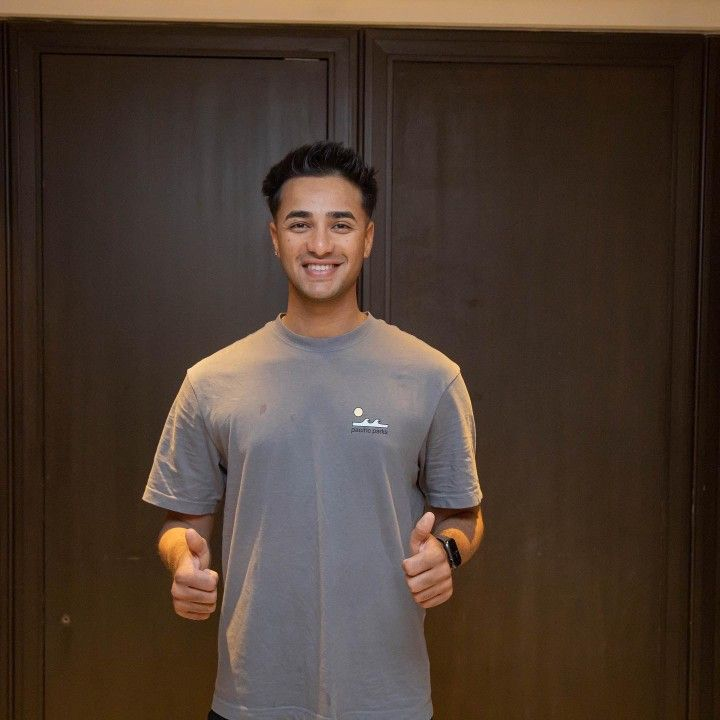

Abhishek Sharma
Abhishek Sharma

FULL NAME: Abhishek Sharma
BORN: September 04, 2000, Amritsar, Punjab
AGE: 23y
BATTING STYLE: Left hand Bat
BOWLING STYLE: Slow Left arm Orthodox
PLAYING ROLE: Allrounder
SUMMARY
Abhishek Sharma IPL factfile - Abhishek Sharma was signed by Delhi Daredevils as a 17-year-old in 2018, a week before India's Under-19 squad, of which he was a part, won the World Cup in New Zealand. - He blitzed 46 off 19 balls on his IPL debut against RCB but spent only one season at Delhi, before joining Sunrisers Hyderabad in 2019, where he has remained ever since. - In IPL 2024, Abhishek smashed the fastest IPL fifty for Sunrisers, off 16 balls, as they amassed the highest total in IPL history - 277 - against Mumbai indians.Abhishek Sharma player profile A clean striker of the ball with a solid game against pace and spin, Abhishek Sharma started off in the middle order but made a smooth transition to the top three for Punjab in domestic cricket and for Sunrisers Hyderabad in the IPL. He's also a handy left-arm spinner who can surprise batters with his backspinning legcutter. He made a name for himself in age-group cricket, first as the leading run-scorer in the Vijay Merchant domestic Under-16 tournament in 2015-16 (where he made an incredible 1200 runs in seven matches), and the next season as India's captain when they won the U-19 Asia Cup title. He also was an integral part of India's U-19 World Cup-winning squad in 2018, scoring 50 and taking 2 for 11 against Bangladesh in the quarter-final. Delhi Daredevils picked him up in the 2018 auction and he smashed 46 off 19 balls in his first IPL game, but lost momentum for a few seasons after that. In 2022, in his fourth season with Sunrisers Hyderabad, Abhishek, now settled in the top order, scored 426 runs at a strike rate of 133. Most memorably, he took 34 off 15 Rashid Khan deliveries in a match against eventual champions Gujarat Titans. A year later, he made 485 runs, with two hundreds and three half-centuries while striking at over 180, as Punjab won their first Syed Mushtaq Ali T20 trophy. Earlier in the tournament, his 112 off 51 balls against Andhra Pradesh powered Punjab to 275 for 6, a tournament record. Another record total followed in the 2024 IPL when he smashed 63 off 23 balls taking Sunrisers to 277 for 3, the highest in IPL history. Still, Abhishek isn't just a limited-overs prospect. On his Ranji Trophy debut in 2017, he scored 94 from No. 8, and In December 2022 he made his first first-class hundred in a draw against Chandigarh.
Signature